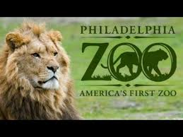

Филадельфия
Филаде́льфия — один из старейших городов США, шестой по населению город страны и самый населённый город штата Пенсильвания, с населением 1 584 138 жителей (по предварительным данным за 2018 год). Население агломерации составляет 6 096 120 жителей. Расположен на реке Делавэр у побережья Атлантического океана.
Филадельфия богата историей и культурой. В исторической части города до сих пор царит атмосфера маленького и тихого городка, каким была и Филадельфия, и другие колониальные города во время образования государства Соединённые Штаты Америки. Основан в 1682 году Уильямом Пенном. Имеет прозвище «Город братской любви» (Φιλαδέλφεια на греческом языке означает братолюбие), это связано с тем, что город основан переселенцами, принадлежавшими к протестантской общине квакеров (в США и сейчас его неофициально называют Квакертаун — город квакеров).
В 1774 году в Филадельфии, в Карпентерс Холле, прошёл Первый Континентальный конгресс — съезд депутатов от 12 из 28 американских колоний Великобритании. В ходе съезда депутаты выработали ряд важных документов, намереваясь добиваться для колоний права самоуправления. А в 1776 году в Филадельфии Второй континентальный конгресс тринадцати североамериканских штатов принял Декларацию независимости. Сам же Второй континентальный конгресс работал в Филадельфии с 1775 года по 1781 год, взяв на себя роль национального правительства США. В 1776, 1777, 1778—1783 и 1790—1800 Филадельфия была временной столицей США. Одним из известных жителей города был Бенджамин Франклин.
Philadelphia Zoo
Philadelphia Zoo
Филадельфийский зоопарк, расположенный в столетнем округе Филадельфии, штат Пенсильвания, на западном берегу реки Шуйлкилл, был первым настоящим зоопарком в Соединенных Штатах. Дипломированный Содружеством Пенсильвании 21 марта 1859 года, его открытие было отложено гражданской войной в США до 1 июля 1874 года.
Больше информацыи читаете в Википедия